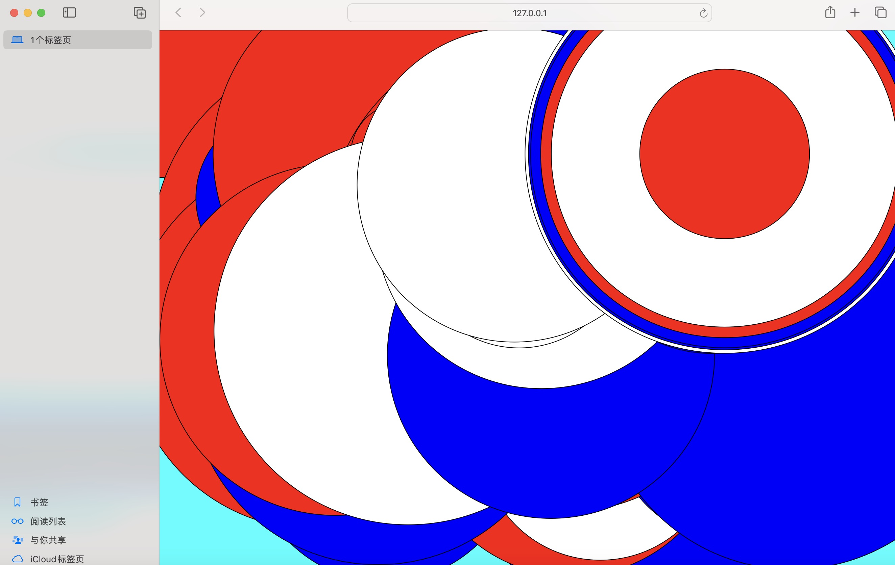

WEEK 4
exercise
The black shapes follow the mouse
The red shapes follow the mouse
CIRCLE FOLLOWS MOUSE

DOODLE WITH LINE + ON MOUSECLICK CLEAR BACKGROUND WITH RANDOM COLOUR
I drew a portrait of a cat.
ASHLEA'S RANDODRAW
Dice Rolling Game
a 6-sided die and a 10-sided die to draw shapes on grid paper according to specified rules.
The rules are as follows
First Throw: Roll the 6-sided die to get a number, each number corresponds to a different shape.
• 1: Circle
• 2: Square
• 3: Line
• 4: Triangle
• 5: Rectangle
• 6: Ellipse
Second Throw: Fill color rule (Roll a die ranging from 0 to 9)
• 0-3: Red
• 4-7: Blue
• 8-9: Black
Third Throw: Border color rule (Roll a die ranging from 0 to 9)
• 0-4: No border
• 5-9: Black border
Fourth and Fifth Throws respectively determine the x and y axes (-0 to 9).
(If the sum of x and y is greater than 7, reroll the dice.)
Shape size: Size (0 = 10)
home work
Dice Rolling Game in p5
I translated the rules of the dice rolling game my team made into p5 code.
Adapted from a dice game
This is a screenshot of my experiment showcase, implemented by modifying a dice game. I removed the generation of other shapes except circles, and changed the command from clicking the mouse to roll the dice to randomly generating circles on the entire page. Additionally, I added white text in the center of the screen. At first, the white text without borders blends into the white background, making it invisible. Only when continuously appearing colorful circles gradually cover the entire screen does the white text become visible.

question
What is generative art?
Generative art refers to any artistic practice in which an artist creates a process, such as a set of natural language rules, a computer program, a computing machine, or other procedural invention, and then sets it in motion. This autonomy results in or leads to a completed work of art.
What is p5?
p5.js is a JavaScript library that makes creative coding accessible for artists, designers, educators, and beginners. It's based on the core principles of Processing, a popular platform for creative coding and visual arts. With p5.js, users can easily create interactive graphics, animations, and generative art projects using simple syntax and a friendly community.